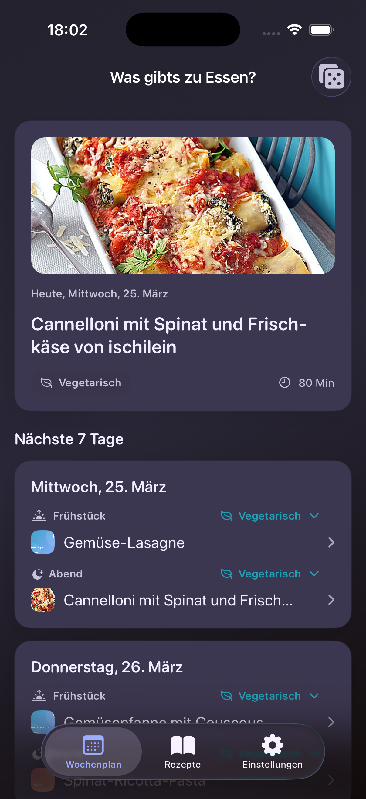

Organization
One app for planning, recipes and settings
The weekly planner, recipe collection and settings are directly accessible. Meals can be planned manually for the next seven days or filled automatically with the dice action.

Private with optional sync
Recipes, settings and weekly plans live on the device. iCloud sync and family sharing for the active list can be enabled optionally.